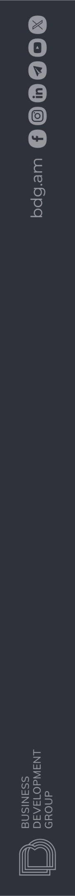

Give a useful calculation a name. Reuse it with different values.
def ticket_cost(count, price):
return count * priceR · 8 minutes. Retrieve nested record access.
def show_ready():
print("Ready")
print("Definition saved")
show_ready()Definition saved Ready
Predict the output before the reveal.
W1 · The indented body runs at the call, not at the definition.
def ticket_cost(count, unit_price):
return count * unit_price
cost = ticket_cost(3, 4)
print(cost)
print(ticket_cost(2, 4) + 1)12 9
Predict the output before the reveal.
W2 · count and unit_price are parameters. 3 and 4 are arguments.
def ticket_cost(count, unit_price):
return count * unit_price
print(ticket_cost(3))TypeError
Which input is missing from the call?
X1 · A deliberately incomplete call. Which required input is missing?
Repair the returned calculation.
Reuse it for two deliveries and a fee.
Full instructions, starter and checks are beside your coding cell.
def show_cost(count, price):
print(count * price)
result = show_cost(3, 4)
print("Saved:", result)12 Saved: None
Does result contain the number that was printed?
W3 · Trace the inner print and the caller’s print separately.
def calculate_cost(count, price):
return count * price
result = calculate_cost(3, 4)
print("Saved:", result)
print("With fee:", result + 2)Saved: 12 With fee: 14
Predict the output before the reveal.
W3b · Calculation and display now have separate jobs.
Return the room’s area.
Let the caller add an allowance.
Full instructions, starter and checks are beside your coding cell.
def entry_message(age):
if age < 12:
return "Come back later"
return "Welcome"
print(entry_message(11))
print(entry_message(12))Come back later Welcome
Predict the output before the reveal.
W4 · Only the chosen path runs. Return ends this call, not the whole script.
Save your work. Return at lesson minute 70.
def count_short_words(words):
count = 0
for word in words:
if len(word) <= 3:
count += 1
return count
words = ["map", "ticket", "bus"]
print(count_short_words(words))2
W5 · Compare return’s indentation with for. Also check an empty list.
Return how many products are available.
Check zero stock and an empty dictionary.
Full instructions, starter and checks are beside your coding cell.
def find_room(rooms, target):
for room in rooms:
if room["name"] == target:
return room
return None
rooms = [{"name":"Studio","seats":8}]
print(find_room(rooms, "Hall"))None
Predict the output before the reveal.
W6 · return None belongs after the loop. One mismatch does not prove absence.
return room # or, after no match: return None
if room is None:
print("Not found")
else:
print(room["seats"])A price of 0 can be valid. How can a caller distinguish it from no match?
W6 · is None checks for the special no-result value.
Return a price from matching records.
Keep the missing message at the caller.
Full instructions, starter and checks are beside your coding cell.
show_order(order)Display the order
order_total(order)Return a number
find_item(order, target)Return a record or None
Which function can another program reuse without the menu?
W7 · Refactoring reorganizes working code while preserving its behavior. DRY: keep a repeated rule in one place.
Run the supplied program.
Extract functions and keep every menu behavior.
Full instructions, starter and checks are beside your coding cell.
Call your total function with a different order.
Does it return a number without asking for input or printing?
Explain one parameter, one argument and where the returned value goes.
Save and push your own work. Default arguments, scope and lambda come later.